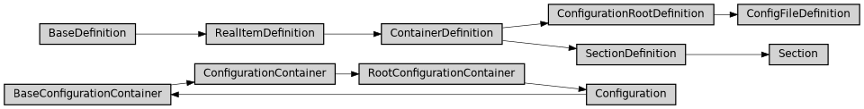

config
Full name: ase2sprkkr.config
Module class hierarchy

Description
This module contains configuration, that could be changed, preferrably by .config/ase2sprkkr/__init__.py file
Functions
|
|
Load user defined preferences from |
|
|
Return a shell command to execute a mpi task. |
Return filename with user preferences |
Classes
|
|
|
|
|